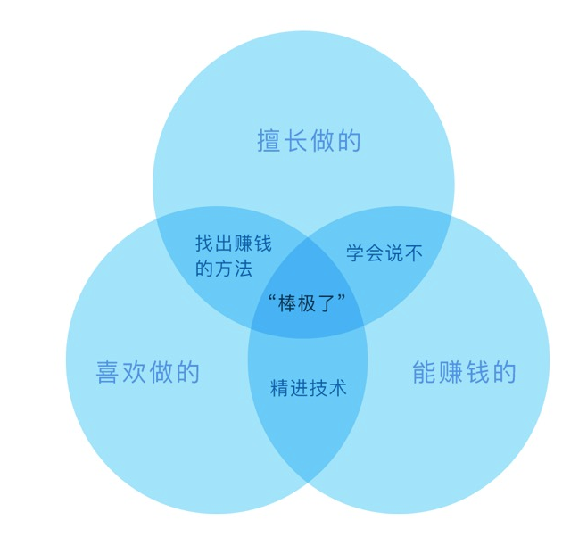
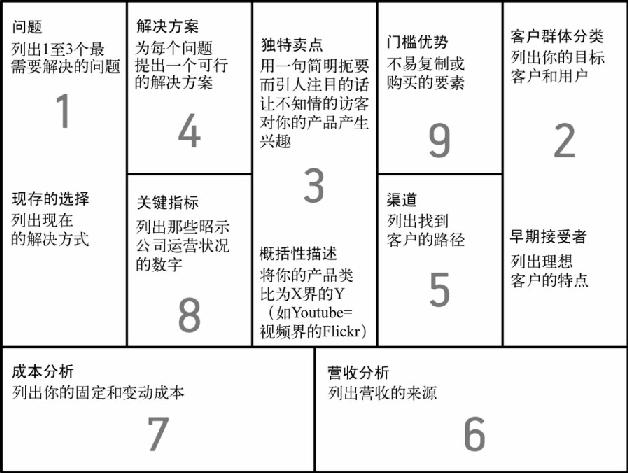

创业不仅仅是要找到一个可以赚钱的生意，更是要找到一个你愿意为之奉献生命的事业。

精益画布
精益画布是呈现在一张纸上的可视化简明商业计划书，体现你正在进行的、可付诸行动的商业计划。
你应该不断地使用和更新你的精益创业画布，它是一份“活的、会呼吸的”计划书。

精益画布的巧妙之处在于：它能让人很容易地发现创业中最大的风险，并促使你理性、诚实地看待自己的创业。
当你不确定是否真的找到了一个好的创业机会时，（阿什·莫瑞亚以亚历山大·奥斯特瓦德）建议：
- 问题：你找到真正的问题了吗
- 客户群体分类：你的目标市场是什么？如何把信息定向传达给特定群体？
- 独特卖点：你能以清晰、独特、令人记忆深刻的方式说明为何你的产品更加优异或者卓尔不群吗？
- 解决方案：你能为现存问题找到正确的解决方案吗？
- 渠道：如何将产品或服务送到客户手中，又如何收取客户支付的款项？
- 收入分析：营收来自哪里？交易为一次性营收（直接交易）还是常续性营收（间接交易）？
- 成本分析：公司的直接、可变和间接成本都是哪些？
- 关键指标：哪些数据指标能让你了解公司的经营状况？
- 门槛优势：什么是你的“力量倍增器”，助你在竞争中横扫对手，所向披靡？
你真的想做这件事吗？
一个创业者如果想要生存下来，（对你产品的）需求、（打造产品的）能力、（实现产品的）欲望缺一不可。
- 如果你喜欢且擅长做某事，却不能以此谋生，那应该**学会将技能变现**
- 如果你擅长某事且可以以之赚钱，但不喜欢它，**学会说不**
- 如果你喜欢做某事且可以以之赚钱，但不是很擅长，**学会把它做好**
3个你需要回答的问题：
- 我是否已经找到了一个值得解决的问题？
- 我所提出的解决方案是否正确？
- 我是否真的想解决它？